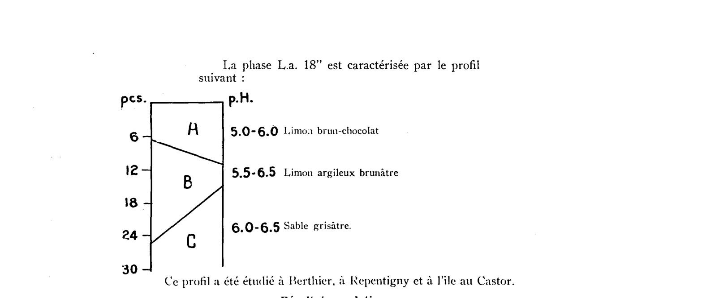

Identification & Caractéristiques Générales
La série Repentigny comprend des sols minéraux développés sur des sédiments meubles d'origine lacustre ou deltaïque, constitués d'une couche supérieure limoneuse et argileuse d'une épaisseur variant de 3 à 5 pieds, reposant en discontinuité sur les argiles marines de la mer de Champlain. Ces dépôts superficiels recouvrent les basses-terres du Saint-Laurent. La morphologie de surface se caractérise par un relief topographique légèrement ondulé, favorisant un écoulement superficiel modéré mais exposant les terres labourées à des risques d'érosion en plaques.
Le profil pédologique présente un drainage naturel qualifié d'imparfait, bien que le sous-sol possède une structure suffisamment développée pour assurer un ressuyage supérieur à celui des argiles massives environnantes. La texture des horizons supérieurs est à dominante limono-argileuse à argilo-limoneuse, conférant au solum une compacité moyenne et une perméabilité modérée. La réaction du sol est généralement acide, nécessitant des apports calciques pour neutraliser l'acidité d'échange. La teneur en matière organique est comparativement faible pour cette catégorie de sols fins, ce qui influence négativement la stabilité structurale des agrégats de surface.
Du point de vue agronomique, ces sols sont exploités principalement pour la culture mixte et les productions fourragères, incluant le foin mêlé et l'avoine, ainsi que des cultures sarclées comme le maïs fourrager et la pomme de terre. Les légumineuses telles que la luzerne y réussissent difficilement sans un chaulage correct et une amélioration de l'égouttement. Les limitations majeures à la production résident dans la battance potentielle des limons, la susceptibilité à l'érosion hydrique sur les pentes douces, ainsi que l'acidité du complexe absorbant. L'installation d'un réseau de drainage souterrain et l'apport régulier d'amendements calcaires et organiques constituent les principales interventions requises pour optimiser le rendement des cultures.
Classification Taxonomique & Environnement Pédologique
| Ordre Pédologique | Gleysolique |
|---|---|
| Grand Groupe (SCSS) | Gleysol luvique |
| Sous-Groupe Taxonomique | Gleysol luvique orthique |
| Famille Pédologique | Argileuse, mixte argileux, neutre |
| Mode de Dépôt Parental | Fluviatile sur marin |
| Classe de Drainage Naturel | Imparfaitement drainé |
| Régime Thermique & Humidité | Doux / Humide |
Description Morphologique du Profil Type
Séquence génétique des horizons pédologiques caractérisant le profil type représentatif de la série Repentigny :
Profil représentatif — Sols de l'île de Montréal
✓ Source : Sols de l'île de Montréal — Page 49Couleur Munsell : Non précisée
Structure & Consistance : Nuciforme et lamellaire
Description morphologique : Argile limoneuse brun grisâtre (2.5yr10yr5/2); tachetures à contraste moyen ou faible de gris (10yr6/1), de gris brunâtre clair (2.5y6/2) et de brun jaunâtre (10yr5/4); structure nuciforme et lamellaire, fine ou moyenne; ferme; légèrement collante et plastique; pH 6.0 à 6.4.
Couleur Munsell : Non précisée
Structure & Consistance : Polyédrique à granulaire
Description morphologique : Terre franche argileuse ou argilo-limoneuse grise ou gris foncé (5y5/1-4/1 ou 7.5yr6/0); marbrures fines avec taches brun rougeâtre (6yr4/3); agrégats grossiers nuciformes fermes dont l'enveloppe est grise et l'intérieur grisâtre clair à brun jaunâtre (5y6/1-10yr5/8); pH 6.0 à 6.8.
Profils Photographiques & Planches de Terrain
Documents iconographiques, figures pédologiques et coupes de terrain documentées dans les mémoires d'inventaire pour de la série Repentigny :

Propriétés Physico-Chimiques & Analyses de Laboratoire
| Horizon | Prof. (pces/cm) | Sable % | Limon % | Argile % | pH | C % | N % | Ca éch. | Mg éch. | K éch. | H+ éch. | Bases tot. | C.E.C. (meq/100g) | Saturation % |
|---|---|---|---|---|---|---|---|---|---|---|---|---|---|---|
| Ac........... | 0-4 | 6.0 | 0 | 22 | 19 | 59 | 8·1 | 55·3 | 26·3 | 1·9 | 2·1 | 0.12 | 0.07 | 2·2 |
| Bg............ | 4-16 | 6·7 | 0 | 15 | 12 | 73 | 3·8 | 56·5 | 29·5 | 2.0 | 2·9 | 0.15 | 0.07 | 2·7 |
| C............. | 16- | 6·9 | 0 | 12 | 12 | 76 | 3·0 | 57·7 | 28·3 | 2·2 | 2.9 | 0.12 | 0.08 | 2·7 |
| A₀A₁........ | 0-3 | 4·2 | 0 | — | — | 27·2 | 53·6 | 13·4 | 1.6 | 0.5 | 0.05 | 0.16 | 1.6 | |
| A₂........... | 3-7 | 4·7 | 3 | 58 | 31 | 11 | 4·6 | 72·3 | 20·7 | 1.9 | 0.6 | 0.04 | 0.04 | 2·2 |
| B₁g.......... | 7-13 | 5·1 | 4 | 82 | 10 | 8 | 1·9 | 70·5 | 23·3 | 2·7 | 1·2 | 0.07 | 0.12 | 2·1 |
| C............. | 13-22 | 5·4 | 0 | 84 | 9 | 7 | 1·1 | 71·7 | 22·7 | 2·7 | 1·1 | 0.09 | 0.11 | 2·3 |
| Ac........... | 0-6 | 5·8 | 1 | 79 | 15 | 6 | 2·8 | — | — | — | — | — | 0.07 | 2·8 |
| B............ | 18-24 | 6·0 | 0 | 90 | 5 | 5 | 0·7 | — | — | — | — | — | 0.04 | 2·5 |
| C............ | 32-38 | 6·6 | 2 | 72 | 9 | 19 | 1·7 | — | — | — | — | — | 0.09 | 2·6 |
| D............ | 48- | 7·4 | 10 | 40 | 32 | 28 | 1·9 | — | — | — | — | — | 0.19 | 3·3 |
| A₁........... | 0-5 | 7·1 | 10 | 43 | 27 | 30 | 7·6 | 60·5 | 22·1 | 3·3 | 2·4 | 0.15 | 0.19 | 4·2 |
| A₂........... | 5-12 | 7·1 | 8 | 39 | 27 | 34 | 5·6 | 61·8 | 23·1 | 1·7 | 1·7 | 0.15 | 0.18 | 4·7 |
| B₂........... | 12-19 | 7·8 | 37 | 49 | 34 | 17 | 2·1 | 37·8 | 13·8 | 14·2 | 9·1 | 0.08 | 0.14 | 3·1 |
| C............ | 19- | 8·1 | 31 | 51 | 29 | 20 | 1·7 | 33·5 | 12·3 | 19·0 | 8.0 | 0.08 | 0.12 | 2·4 |
| A₁........... | 0-3 | 7·4 | 2 | 45 | 36 | 19 | 20·1 | 52·3 | 19·3 | 2·3 | 1·4 | 0.16 | 0.20 | 4.0 |
| A₂........... | 3-7 | 7·6 | 4 | 45 | 26 | 29 | 5·2 | 63·8 | 23·8 | 1·7 | 1·3 | 0.15 | 0.13 | 3·5 |
| B₂........... | 7-11 | 7·8 | 7 | 40 | 30 | 30 | 5·2 | 58·1 | 24·1 | 3·8 | 2·5 | 0.12 | 0.15 | 3·4 |
| B₃........... | 11-23 | 7·9 | 23 | 45 | 36 | 19 | 5·3 | 48·7 | 20·1 | 8·4 | 6·2 | 0.09 | 0.15 | 3·4 |
| C............ | 23- | 7·8 | 29 | 52 | 41 | 7 | 1·9 | 31·4 | 15·6 | 17·4 | 11·5 | 0.05 | 0.11 | 2·3 |
Particularités Régionales, Phases & Variantes Pédologiques
Déclinaisons régionales, faciès texturaux, phases d'érosion ou de pierrosité et variantes cartographiées par étude pour de la série Repentigny :
| Étude Régionale | Symbole | Appellation / Phase / Variante | Différenciation avec la série type (Analyse pédologique) |
|---|---|---|---|
| Les sols de l’Île de Montréal | Rp |
Repentigny loam argileux | Modalité modale de référence (type de base de la série). |
| Sols de l'île de Montréal | RPY |
Série Repentigny | Conforme à la série type de référence (caractéristiques texturales et drainage identiques). |
Distribution Pédo-Paysagère & Représentativité Cartographique (Couverture PPS 2026)
- Baudette loam limoneux à loam limono-argileux (BET) — co-occurrente dans 2 polygone(s)
- Alluvion non différenciée à surface sableuse (ALL) — co-occurrente dans 2 polygone(s)
Aptitudes Agronomiques, Hydropédologie & Conservation des Sols
Indicateurs Hydropédologiques & Vulnérabilité à l'Érosion (BDHP 2026)
Interprétation BDHP : Potentiel de ruissellement modérément élevé. Faible taux d'infiltration, présence d'horizons ralentissant le drainage descendant.
Classement selon l'Inventaire des Terres du Canada (ITC / CLI) : Classe 2c.
- Potentiel agricole : Terroir adapté aux cultures régionales selon la texture dominante et la régie de drainage.
- Contraintes majeures : Imparfaitement drainé. Risque d'engorgement temporaire ou d'excès d'eau printanier.
- Gestion & Aménagement : Drainage souterrain ou superficiel préconisé sur les terres planes. Chaulage et apport organique régulier selon les bilans agronomiques.
- Cultures adaptées : Grandes cultures (maïs, soya, céréales), prairies fourragères et cultures maraîchères selon le contexte géomorphologique.